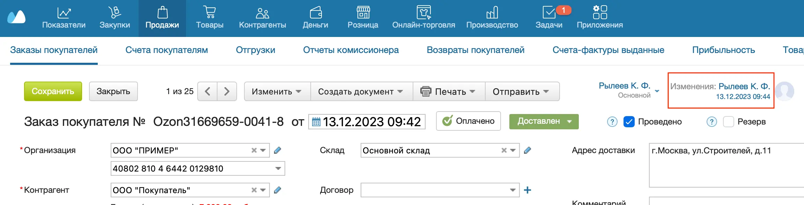
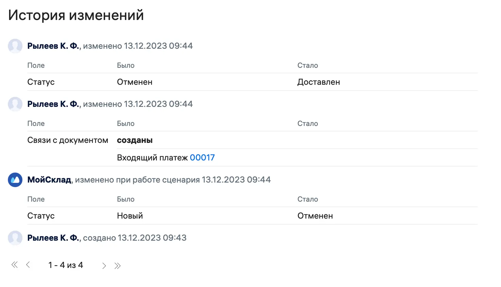

Аудит — это история изменений. Аудит позволяет следить за процессами в системе и контролировать работу сотрудников. Каждое действие в МоемСкладе учитывается в аудите.
Общий аудит
В разделе Показатели → Аудит фиксируются все события с момента появления аккаунта: создание, изменение и удаление документов, вход в систему и выход из нее, синхронизации, экспорт, импорт и так далее. Удалять события нельзя.
С помощью фильтров можно посмотреть все действия конкретного пользователя или все действия определенного типа — например, экспорт контрагентов.
По умолчанию доступ к Аудиту имеют только администраторы, но при необходимости можно настроить соответствующие права и для других сотрудников.
Локальный аудит
Для всех документов, справочников и настроек действует локальный аудит.
Рассмотрим на примере Заказа покупателя:
- Перейдите в раздел Продажи → Заказы покупателей.
- Выберите нужный Заказ покупателя из списка.
- Нажмите на ссылку в графе Изменения в правом верхнем углу.

- Откроется окно с историей изменений.

Локальный аудит могут просматривать все сотрудники, у которых есть доступ к этому документу, справочнику или настройкам. Доступом можно управлять.